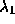

Simulations were carried out to validate and justify the use of the proposed algorithm for obtaining surface description from binocular stereo. One of the main objective was to show the enhanced performance when various modules are integrated. In addition, we wanted to study the effect of integration when a precomputed edge map was used to drive the integration model. We also wanted to explore the accuracy of the disparity map and the reduction in computation when multiresolution approach was used in the stereo algorithm.
Simulations were carried out on three different pairs of stereo images of size . The first pair is the random dot stereogram (Figure 9 , Figure 10 ), the two images are identical except for the fact that a small square portion of the left image (Figure 9 ) has been shifted by ten pixels to the right and placed in Figure 10 . The second set (Figure 11 , Figure 12 ) is that of an auto part and the third pair (Figure 13 , Figure 14 ) is the aerial view of the Pentagon. In all our simulations we make use of the knowledge of the maximum disparity range in each of the stereo pair as shown in Table 1.
Figure 15 through Figure 26 are concerned with the random dot stereogram (Figure 9 , Figure 10 ). The first set of results (Figure 15 and Figure 16 ) are obtained when no integration is used (Section 7.1.1), Figure 15 is the disparity plotted as an intensity map (black shows zero disparity) and Figure 16 is the disparity plotted as a depth map. The next set of results (Figure 17 , Figure 18 ) are the intensity plot and the depth map of the disparity using the precomputed edge integration model of Figure 7. Figure 19 and Figure 20 are obtained using the interactive edge integration model of Figure 8. Figure 21 is the intensity plot of the disparity and Figure 22 is the depth plot of the disparity using the general stereo integration model of Figure 2. Figure 23 - Figure 26 are obtained using the multiresolution technique. Figure 23 and Figure 24 are the disparity plotted as an intensity map and disparity plotted as depth for the case where only precomputed edges are used along with multiresolution, (Section 7.2.1). Figure 25 and Figure 26 \ are obtained using interactive edge computation along with multiresolution (Section 7.2.2).
Figure 27 through Figure 38 and Figure 39 through Figure 50 depict the results of various experiments using the auto part stereo pair and the Pentagon stereo pair, respectively. The sequence of operations is the same as that depicted for the random dot stereogram and this follows the sequence of subsections and sub-subsections of Section 7. This sequence is, no integration, only precomputed edges, interactive edge computation, precomputed edges and interactive edge computation, only precomputed edged using multiresolution, and interactive edges using multiresolution. In each case the intensity disparity map as well as 3D display of the disparity map are shown.
In all our simulations the number of integrated iterations was fixed at 200 for the monoresolution case and 20 for the multiresolution case. The value of the threshold in (6) was set to 20.
The parameter values are shown in Table 2. Those that are not shown (i.e , , , ) take a value 1. The value of the parameters in the case of multiresolution was kept identical over all resolutions.
Table 2: Values of parameters used in simulation